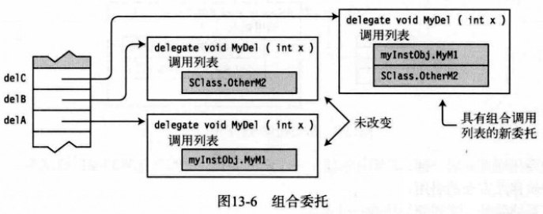

什么是委托？
委托是持有一个或多个方法的对象。但委托与典型的对象不同，执行委托，就是执行委托对象所“持有”的方法。

注意：
- 方法的列表称为调用列表。
- 委托保存的方法可以来自任何类或结构，只要委托的返回类型，委托的签名（包括ref和out修饰符）和方法相匹配。
- 调用列表中的方法可以是实例方法，也可以是静态方法。
- 在调用委托的时候，会执行其调用列表中的所有方法。
方法签名
方法的签名组成：方法的名称、参数的数目、参数的数据类型和顺序、参数修饰符。
long AddValues(int a, int b) { }
|
注意：
- 返回值类型不是签名的一部分。
- 形参的名称不是签名的一部分。
如何使用委托
- 声明一个委托类型。
- 使用该委托类型声明一个委托变量。
- 为委托类型增加方法。
- 调用委托执行方法。

声明委托类型
语法：delegate 返回类型 委托类型名(签名);
delegate void MyDel(int x);
|
注意：
- 委托类型的声明和方法的声明相似，有返回类型和签名，但是委托没有方法主体。
- 委托类型不需要在类内部声明。
创建委托对象并赋值
在委托类型声明之后，可以声明变量并创建类型的对象。
有两种创建委托对象的方式：
- 使用带new运算符的对象创建表达式。
- 使用快捷语法，即方法说明符“=”。
通过new运算符创建对象
delegate void MyDel(int x);
Mydel deVar, dVar;
deVar = new MyDel(myInstObj.MyM1);
dVar = new MyDel(SClass.OtherM2);
|
通过方法说明符创建对象
delegate void MyDel(int x);
Mydel deVar, dVar;
deVar = myInstObj.MyM1;
dVar = SClass.OtherM2;
|
委托的恒定性
组合委托：可以使用运算符“+=”为委托增加方法，或使用运算符“-=”为委托移除方法。
为委托增加和移除方法，看起来像是委托被修改了，其实它们并没有被修改。事实上，委托是恒定的。委托对象被创建后不能再被改变。
MyDel delVar = inst.MyM1;
delVar += SC1.M3;
delVar += X.Act;
|
注意：在为委托增加和移除方法时实际发生的是创建了一个新的委托，其调用列表是增加和移除后的方法结果。

委托的示例
简单带参数委托DEMO
delegate void MyDel(int value);
class Program
{
void PrintLow(int value)
{
Console.WriteLine("{0} - Low Value", value);
}
void PrintHigh(int value)
{
Console.WriteLine("{0} - High Value", value);
}
static void Main()
{
Program program = new Program();
MyDel del;
Random rand = new Random();
int randomValue = rand.Next(99);
del = randomValue < 50
? new MyDel(program.PrintLow)
: new MyDel(program.PrintHigh);
del(randomValue);
}
}
|
简单无参数多方法列表委托DEMO
delegate void PrintFunction();
class Test
{
public void Print1()
{
Console.WriteLine("Print1 -- instance");
}
public void static Print2()
{
Console.WriteLine("Print2 -- static");
}
}
class Program
{
static void Main()
{
Test t1 = new Test();
PrintFunction pf;
pf = t.Print1;
pf += Test.Print2;
pf += t.Print1;
pf += Test.Print2;
if(null != pf)
{
pf();
}
else
{
Console.WriteLine("Delegate is empty");
}
}
}
|
带返回值的委托DEMO
delegate int MyDel();
class MyClass
{
int IntValue = 5;
public int Add2()
{
IntValue += 2;
return IntValue;
}
public int Add3()
{
IntValue += 3;
return IntValue;
}
}
class Program
{
static void Main()
{
MyClass mc = new MyClass();
MyDel mDel = mc.Add2;
mDel += mc.Add3;
mDel += mc.Add2;
Console.WriteLine("Value: {0}", mDel());
}
}
|
带引用参数的委托
delegate void MyDel(ref int x);
class MyClass
{
public void Add2(ref int x)
{
x += 2;
}
public void Add3(ref int x)
{
x += 3;
}
static void Main()
{
MyClass mc = new MyClass();
MyDel mDel = mc.Add2;
mDel += mc.Add3;
mDel += mc.Add2;
int x = 5;
mDel(ref x);
Console.WriteLine("Value: {0}", x);
}
}
|
匿名方法
匿名方法（anonymous method）是在初始化委托时内联声明的方法。
何时使用：当一个方法只会被调用一次的时候，没有必要创建独立的具名方法，这个时候可以使用匿名方法。
命名方法：
class Program
{
public static int Add20(int x)
{
return x + 20;
}
delegate int OtherDel(int InParam);
static void Main()
{
OtherDel del = Add20;
Console.WriteLine("{0}", del(5));
Console.WriteLine("{0}", del(6));
}
}
|
匿名方法：
class Program
{
delegate int OtherDel(int InParam);
static void Main()
{
OtherDel del = delegate(int x)
{
return x + 20;
};
Console.WriteLine("{0}", del(5));
Console.WriteLine("{0}", del(6));
}
}
|
使用匿名方法
我们可以在如下地方使用匿名方法.
- 声明委托变量时作为初始化表达式。
- 组合委托时在赋值语句的右边。
- 为委托增加事件时在赋值语句的右边。（第十四章会介绍事件）
匿名方法的语法
关键字 参数列表 语句块
↓ ↓ ↓
delegate (Parameters) { ImplementationCode }
|
返回类型
匿名方法不会显式声明返回类型。但是如果委托类型有返回值，则实现代码必须返回一个与委托的返回类型相匹配的值。
delegate int OtherDel(int InParam);
static void Main()
{
OtherDel del = delegate(int x)
{
return x + 20;
};
}
|
参数
匿名方法的参数列表中的参数数量、参数类型及位置、修饰符必须与委托类型的参数列表匹配。
注意：如果委托的参数列表不包含任何out参数，并且匿名方法没有使用任何参数，则匿名方法可以省略参数列表。
delegate void SomeDel(int x);
SomeDel sDel = delegate
{
PrintMessage();
Cleanup();
};
|
params参数
如果委托声明的参数列表包含了params参数，那么匿名方法的参数列表将忽略params参数关键字。
delegate void SomeDel(int x, params int[] y);
SomeDel mDel = delegate(int x, int[] y)
{
};
|
变量和参数的作用域
参数以及声明在匿名方法内部的局部变量，作用域限制在实现方法的内部。
外部变量
与委托的具名方法不同，匿名方法可以访问它们外围作用域的局部变量和环境。外围作用域的变量叫做外部变量（outer variable）。用在匿名方法实现代码中的外部变量称为被方法捕获（captured）。
delegate void MyDel();
int x = 5;
MyDel del = delegate
{
Console.WriteLine("{0}", x);
};
|
捕获变量的生命周期的扩展
只要捕获方法还是委托的一部分，即使变量已经离开了作用域，捕获的外部变量也会一直有效。
delegate void MyDel();
static void Main()
{
MyDel mDel;
{
int x = 5;
mDel = delegate
{
Console.WriteLine("Value of x: {0}", x);
};
}
if (null != mDel)
{
mDel();
}
}
|
Lambda表达式
在匿名方法的语法中，delegate关键字是有点多余，因为编译器已经知道我们在将方法赋值给委托。我们可以很容易地通过如下步骤把匿名方法转换为Lambda表达式：
- 删除delegate关键字。
- 在参数列表和匿名方法主体之间放Lambda运算符=>（读作goes to）。
MyDel del = delegate(int x) { return x + 1; };
MyDel le1 = (int x) => { return x + 1; };
|
术语Lambda表达式来源于数学家Alonzo Church等人在1920到1930年期间发明的Lambda积分。Lambda积分是用于表示函数的一套系统，它使用希腊字母Lambda（λ）来表示无名函数。近来，函数式编程语言（如Lisp及其方言）使用这个术语来表示可以直接用于描述函数定义的表达式，表达式不再需要有名字了。
除了这种简单的转换，通过编译器的自动推断，我们可以更进一步简化Lambda表达式。
- 编译器还可以从委托的声明中知道委托参数的类型，因此Lambda表达式允许我们省略类型参数，如le2。
- 带有类型的参数列表称为显式类型。
- 省略类型的参数列表称为隐式类型。
- 如果只有一个隐式类型参数，我们可以省略周围的圆括号，如le3。
- 最后，Lambda表达式允许表达式的主体是语句块或表达式。如果语句块包含了一个返回语句，我们可以将语句块替换为return关键字后的表达式，如le4。
MyDel del = delegate(int x) { return x + 1; };
MyDel le1 = (int x) => { return x + 1; };
MyDel le2 = (x) => { return x + 1; };
MyDel le3 = x => { return x + 1; };
MyDel le4 = x => x + 1 ;
|
Lambda表达式的完整示例
delegate double MyDel(int par);
class Program
{
static void Main()
{
MyDel del = delegate(int x) { return x + 1; };
MyDel le1 = (int x) => { return x + 1; };
MyDel le2 = (x) => { return x + 1; };
MyDel le3 = x => { return x + 1; };
MyDel le4 = x => x + 1 ;
Console.WriteLine("{0}", del(12));
Console.WriteLine("{0}", le1(12));
Console.WriteLine("{0}", le2(12));
Console.WriteLine("{0}", le3(12));
Console.WriteLine("{0}", le4(12));
}
}
|
有关Lambda表达式的参数列表的要点如下：
- Lambda表达式参数列表中的参数必须在参数数量、类型和位置上与委托相匹配。
- 表达式的参数列表中的参数不一定需要包含类型（隐式类型），除非委托有ref或out参数，此时必须注明类型（显式类型）。
- 如果只有一个参数，并且是隐式类型的，周围的圆括号可以被省略，否则必须有括号。
- 如果没有参数，必须使用一组空的圆括号。